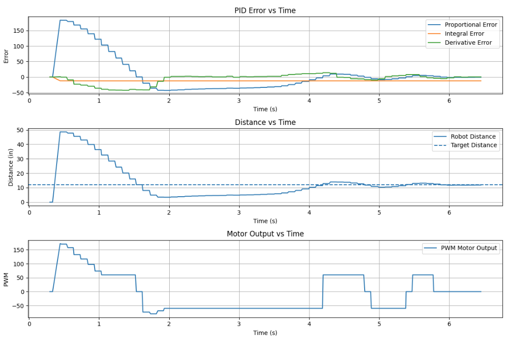

Lab 5: Linear PID Control + Linear Extrapolation
In this lab I used Time of Flight feedback to drive the robot toward a wall and stop at 12 inches. I built a Bluetooth debugging workflow, tuned PID gains, added a deadband near the setpoint, and used linear extrapolation so the control loop could run faster than the ToF update rate.
1. Prelab: Bluetooth Debugging Setup
I placed the main ToF and PID behavior inside a Bluetooth command case instead of running it directly in
loop(). This let me start a test from Python, collect data for a fixed number of
iterations, and send the saved arrays back over Bluetooth for plotting.
In GET_ALL, I used a loop limit of 1000 iterations, which gave about 6-7 seconds of data.
I stored values such as time, distance, and motor output. I also made an END_PID command
to stop a run early and still return partial data for debugging.
Bluetooth Command Structure
switch (cmd_type){
case GET_ALL:{
BLEDevice central = BLE.central();
if (central) {
if (central.connected()) {
write_data();
read_data();}
}
if (!PID_state) break;
}
case END_PID:{
PID_state = false;
ToF_Sensor_1.stopRanging();
ToF_Sensor_2.stopRanging();
stop_motors();
break;
}
}2. Position Control Goal
The goal was to have the robot drive toward a wall and stop at a setpoint of 12 inches. The main challenge was balancing speed and stability so the robot moved quickly without overshooting into the wall.
3. Proportional Gain Tuning
I started with proportional control only and tested Kp = 0.1, 3,
3.5, and 4. At Kp = 0.1 the response was too weak. At
Kp = 3 the robot moved toward the wall but felt slow. At Kp = 4 it became too
aggressive and touched the wall.
I chose Kp = 3.5 because it gave the best balance between speed and
control. For my setup, a reasonable proportional gain range was about 3 to 4.
Proportional Control Idea
error1P = distance1_in - targetDistance1;
output = kp * error1P;4. Deadband Compensation
After tuning Kp, I added a deadband to reduce oscillation near the setpoint. Small motor
commands were not always enough to overcome friction, so the robot could jitter close to the target.
To fix this, I stopped both motors whenever the robot was within 0.5 inches of the desired distance.
Deadband Logic
float deadband = 0.5; // allowed error in inches
if (fabs(error1P) < deadband) {
stop_motors();
dutystate = 0;
}
else if (error1P > 0) {
drive_forward(duty1);
dutystate = 1;
}
else {
drive_backward(duty1);
dutystate = -1;
}5. Integral and Derivative Tuning
I then tested integral gain values of 0.02, 0.01, 0.005, and
0.002. These were harder to tune because small changes caused large differences in
behavior. I also tested derivative control to reduce overshoot as the robot approached the wall.
A combined starting point I used was Kp = 3.5, Ki = 0.02, and
Kd = 0.8. The integral term helped with steady-state error, while the derivative
term helped make the stop more controlled.
After finner tuning, i ened up with Kp = 5, Ki = 0.01, and Kd = 1.0. The
higher proportional gain made the robot more responsive, while the lower integral gain reduced overshoot.
6. ToF Sampling Rate and Extrapolation
The ToF sensor updates slower than the main control loop, so I did not want the controller to wait for a new reading every iteration. Instead, the PID loop can keep running while checking whether fresh sensor data is available.
To improve this further, I used the last two ToF readings to estimate the current distance. This linear extrapolation lets the controller react between sensor updates and helps when the robot is moving quickly.
Linear Extrapolation Equation
slope = (d2 - d1) / (t2 - t1);
estimated_distance = d2 + slope * (t_now - t2);Raw vs Estimated Distance (Placeholder)

7. Wind-Up Protection
For the 5000-level version of the lab, I also considered integrator wind-up. This happens when the integral term keeps building while the motors are saturated or the robot cannot respond well, which can cause extra overshoot later.
The fix is to clamp the integral term to a limited range so it cannot grow too large.
Example Integrator Clamp
integral += error * dt;
if (integral > integral_max) integral = integral_max;
if (integral < -integral_max) integral = -integral_max;8. Experimental Results
The plots below should show how the robot approached the wall, how close it got to the 12 inch setpoint, and how the motor commands changed during the run. I also included placeholders for repeated test videos.
Kp = 5.0, Ki = 0.01, Kd = 1.0,

Motor Input vs Time (Placeholder)

Kp = 3.5
Kp = 3.5 & Ki = 0.1
Kp = 5 & Ki = 0.01 & Kd = 1.0
9. Conclusion
Overall, this lab showed how controller tuning, sensor timing, and practical motor limits all affect
real robot behavior. My best proportional starting point was Kp = 3.5, and deadband logic
improved stability near the setpoint. Linear extrapolation was useful because it let the PID loop keep
updating between ToF measurements, and wind-up protection helped make the integral term safer to use.